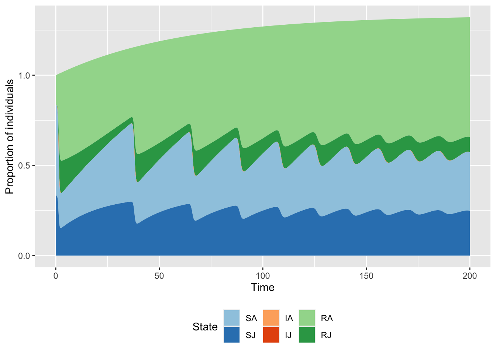
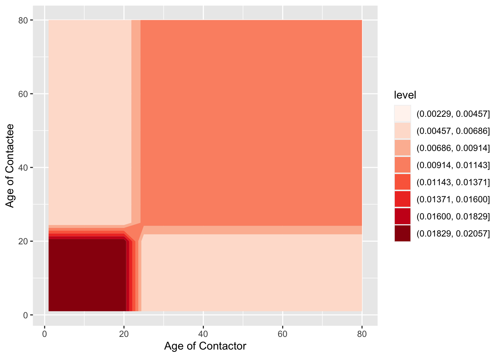
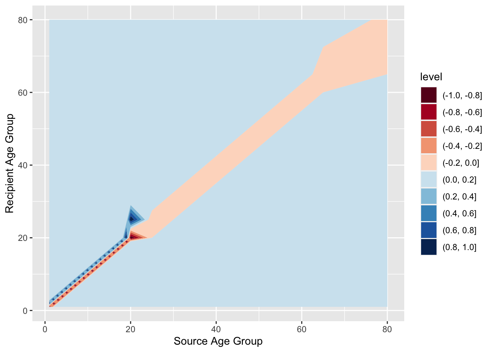
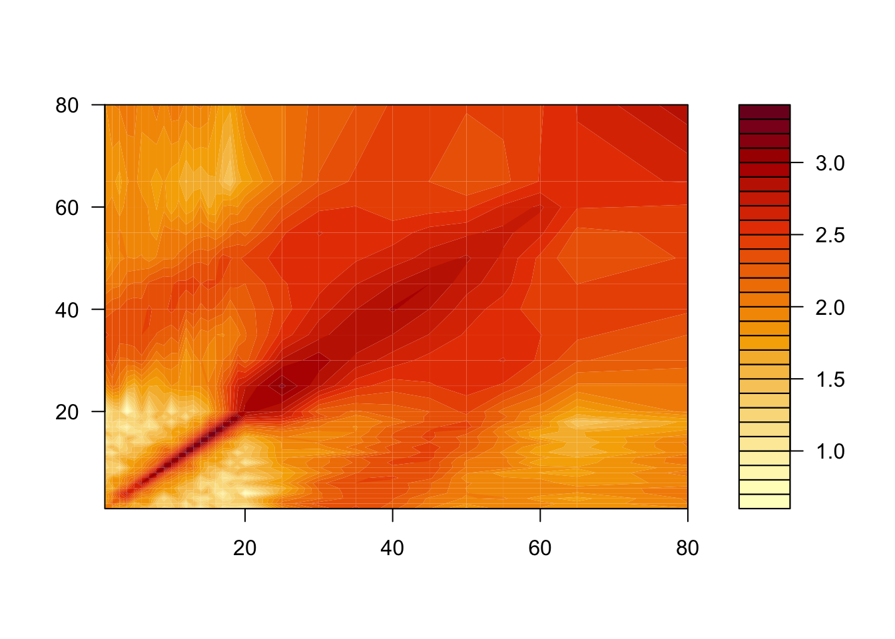
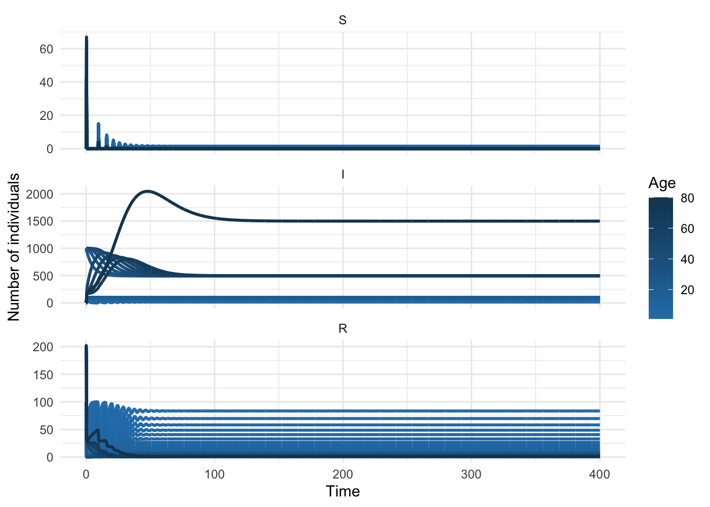
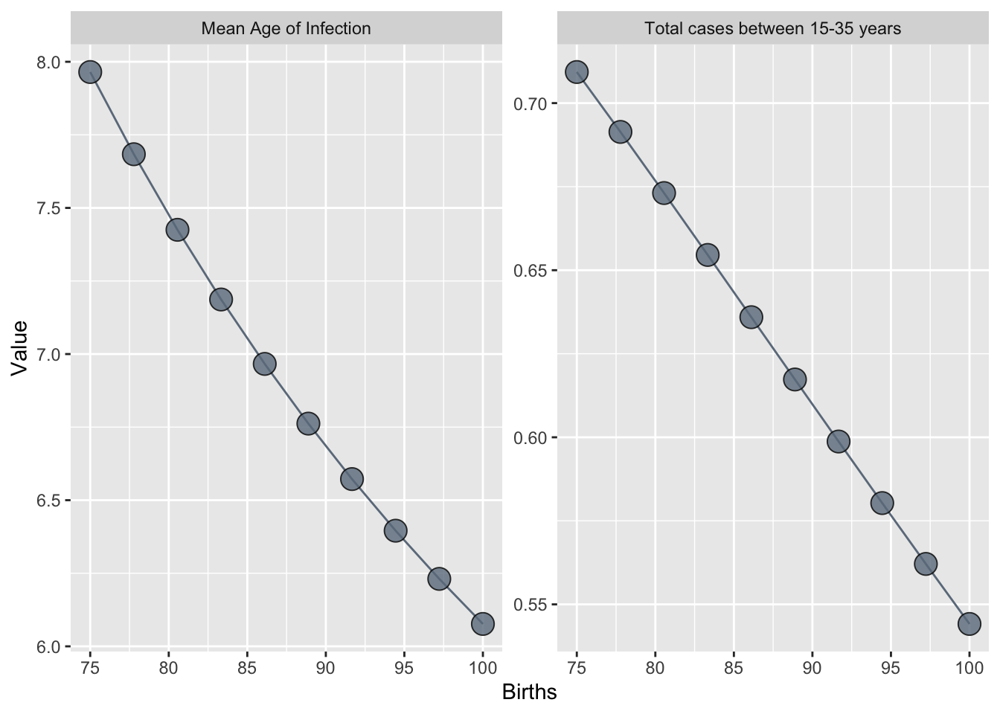
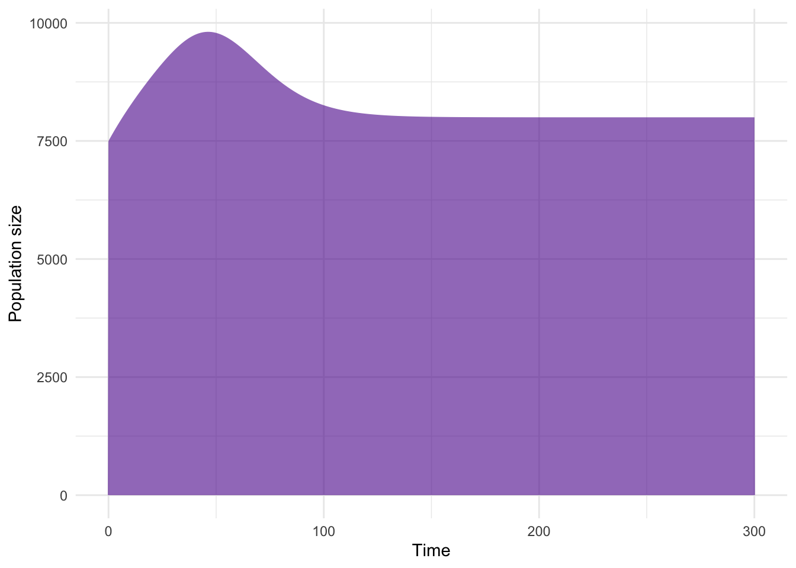
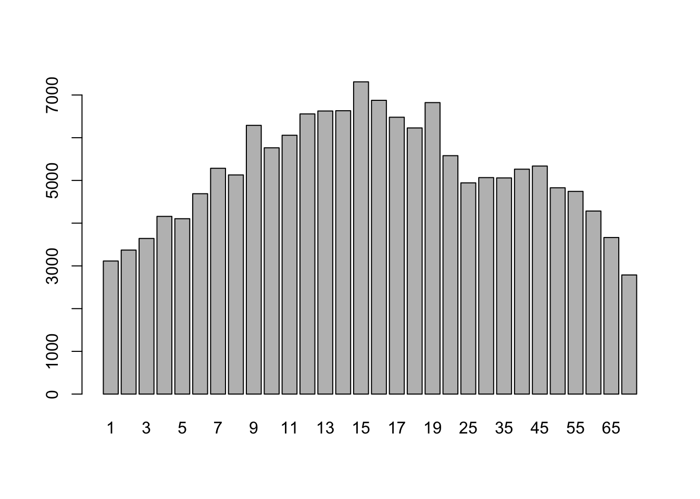

7 R Session 02
Heterogeneity and Age Structure in SIR Models
![]()
Materials adapted from Helen Wearing and Aaron King
Code
7.1 A Model With 2 Classes
We’ll start with the simplest mechanistic model of two classes we can think of, which has separate classes for two groups \(a\) and \(b\). These groups could represent different socioeconomic classes, for example.

Which can be written in equations as, \[ \begin{aligned} \frac{dS_a}{dt} &= -\lambda_a\,S_a \phantom{-\gamma\,I_b}\\ \frac{dS_b}{dt} &= -\lambda_b\,S_b \phantom{-\gamma\,I_b}\\ \frac{dI_a}{dt} &= \phantom{-}\lambda_a\,S_a -\gamma\,I_a\\ \frac{dI_b}{dt} &= \phantom{-}\lambda_b\,S_b-\gamma\,I_b\\ \frac{dR_a}{dt} &= \phantom{-\lambda_a\,S_b}+\gamma\,I_a\\ \frac{dR_b}{dt} &= \phantom{-\lambda_a\,S_b}+\gamma\,I_b\\ \end{aligned} \]
The \(\lambda\)s denote the group-specific force of infections:
\[ \begin{aligned} \lambda_a &= \beta_{aa}\,I_a+\beta_{ab}\,I_b\\ \lambda_b &= \beta_{ba}\,I_a+\beta_{bb}\,I_b \end{aligned} \]
In this model, each population can infect each other but the infection moves through the populations separately. Let’s simulate such a model. To make things concrete, we’ll assume that the transmission rates \(\beta\) are greater within groups than between them.
Code
ab_params <- c(
beta_within = 0.025,
beta_between = 0.005,
recovery = 10
)Code
# Here we set up the ODE model that matches the equations above
ab_model <- function (t, x, p, ...) {
Sa <- x["Sa"]
Sb <- x["Sb"]
Ia <- x["Ia"]
Ib <- x["Ib"]
Ra <- x["Ra"]
Rb <- x["Rb"]
beta_within <- p["beta_within"]
beta_between <- p["beta_between"]
recovery <- p["recovery"]
# group A force of infection
lambda_a <- beta_within * Ia + beta_between * Ib
# group B force of infection
lambda_b <- beta_within * Ib + beta_between * Ia
dSadt <- - lambda_a * Sa
dSbdt <- - lambda_b * Sb
dIadt <- lambda_a * Sa - recovery * Ia
dIbdt <- lambda_b * Sb - recovery * Ib
dRadt <- recovery * Ia
dRbdt <- recovery * Ib
list(c(
dSadt,
dSbdt,
dIadt,
dIbdt,
dRadt,
dRbdt
))
}Code
ab_df <- ab_sol %>%
as_tibble() %>%
mutate(
across(everything(), as.numeric),
Na = Sa + Ia + Ra,
Nb = Sb + Ib + Rb
) %>%
pivot_longer(
cols = -time,
names_to = c("state", "group"),
names_sep = 1,
values_to = "value"
) %>%
mutate(
state = factor(state, levels = c("S", "I", "R", "N")),
group = paste("Group", str_to_upper(group))
)Code
SIRcolors <- c("#1f77b4", "#ff7f0e", "#FF3851", "#591099")
ggplot(ab_df, aes(x = time, y = value, color = state)) +
geom_line(linewidth = 1.5) +
facet_wrap(~group, scales = "free_y") +
scale_color_manual(
values = SIRcolors,
labels = c("Susceptible", "Infected", "Recovered", "Total")
) +
labs(
x = "Time",
y = "Number of individuals",
color = "State"
) +
theme(legend.position = "bottom")
Despite using the same transmission rates, the epidemic in group B is much larger than in group A. Why do you think this is?
Now let’s plot the proportion of individuals in each state for the two groups.
Code
Code
Scolors <- RColorBrewer::brewer.pal(3, "Blues")[c(2, 3)]
Icolors <- RColorBrewer::brewer.pal(3, "Oranges")[c(2, 3)]
Rcolors <- RColorBrewer::brewer.pal(3, "Greens")[c(2, 3)]
ggplot(ab_df_props, aes(x = time, y = prop, fill = state_group)) +
geom_area() +
scale_fill_manual(
values = c(Scolors, Icolors, Rcolors),
limits = c("SA", "SB", "IA", "IB", "RA", "RB"),
) +
labs(
x = "Time",
y = "Proportion of individuals",
fill = "State"
) +
theme(legend.position = "bottom")
7.2 A Model With 2 Age Classes
Note that age is a special kind of heterogeneity in an epidemic model because individuals necessarily move from one class (younger) to another class (older) in a directional fashion that is independent of the infection and recovery process.
We’ll start by introducing age into the model above. So now \(a\) becomes juveniles and \(b\) becomes adults. And, independent of the disease process, juveniles (of any category) age into adults. Additionally, new juveniles are added through births (always first susceptible) and old individuals are lost to death.

We can do this very simply using the same ingredients that go into the basic SIR model. In that model, the waiting times in the S and I classes are exponential. Let’s assume the same thing about the aging process. We’ll also add in births into the juvenile susceptible class and deaths from the adult classes.
\[ \begin{aligned} \frac{dS_J}{dt} &= B -\lambda_J\,S_J \phantom{- \gamma\,I_A} -\alpha\,S_J \phantom{-\mu\,S_A}\\ \frac{dS_A}{dt} &= \phantom{B} - \lambda_A\,S_A \phantom{- \gamma\,I_A} +\alpha\,S_J -\mu\,S_A\\ \frac{dI_J}{dt} &= \phantom{B} +\lambda_J\,S_J - \gamma\,I_J -\alpha\,I_J \phantom{-\mu\,S_A}\\ \frac{dI_A}{dt} &= \phantom{B} +\lambda_A\,S_A - \gamma\,I_A + \alpha\,I_J - \mu\,I_A\\ \frac{dR_J}{dt} &= \phantom{B - \lambda_J\,S_A} + \gamma\,I_J - \alpha\,R_J \phantom{- \mu\,S_A}\\ \frac{dR_A}{dt} &= \phantom{B - \lambda_J\,S_A} + \gamma\,I_A + \alpha\,R_J -\mu\,R_A\\ \end{aligned} \]
Now, let’s simulate this model, under the same assumptions about transmission rates as above.
Code
# define the parameters
demog_params <- c(
beta_within = 0.004,
beta_between = 0.002,
recovery = 10,
births = 100,
age_band_j = 20,
age_band_a = 60
)Code
demog_model <- function (t, x, p, ...) {
Sj <- x["Sj"]
Sa <- x["Sa"]
Ij <- x["Ij"]
Ia <- x["Ia"]
Rj <- x["Rj"]
Ra <- x["Ra"]
beta_within <- p["beta_within"]
beta_between <- p["beta_between"]
recovery <- p["recovery"]
births <- p["births"]
aging_j <- 1 / p["age_band_j"]
aging_a <- 1 / p["age_band_a"]
# juv. force of infection
lambda_j <- beta_within * Ij + beta_between * Ia
# adult. force of infection
lambda_a <- beta_within * Ia + beta_between * Ij
dSjdt <- births - (lambda_j * Sj) - (aging_j * Sj)
dSadt <- -(lambda_a * Sa) + (aging_j * Sj) - (aging_a * Sa)
dIjdt <- (lambda_j * Sj) - (recovery * Ij) - (aging_j * Ij)
dIadt <- (lambda_a * Sa) - (recovery * Ia) + (aging_j * Ij) - (aging_a * Ia)
dRjdt <- (recovery * Ij) - (aging_j * Rj)
dRadt <- (recovery * Ia) + (aging_j * Rj) - (aging_a * Ra)
list(c(
dSjdt,
dSadt,
dIjdt,
dIadt,
dRjdt,
dRadt
))
}Note that in this function, \(\mu=\) aging_a \(=\) 1 / p["age_band_a"], i.e., death, is just like another age class.
Code
## initial conditions
demog_yinit <- c(Sj = 2000, Sa = 3000, Ij = 0, Ia = 1, Rj = 0, Ra = 1000)
demog_sol <- deSolve::ode(
y = demog_yinit,
times = seq(0, 200, by = 0.1),
func = demog_model,
parms = demog_params
)
demog_df <- demog_sol %>%
as_tibble() %>%
mutate(
across(everything(), as.numeric),
Nj = Sj + Ij + Rj,
Na = Sa + Ia + Ra,
N = Nj + Na
) %>%
pivot_longer(
cols = -c(time, N),
names_to = c("state", "group"),
names_sep = 1,
values_to = "value"
) %>%
mutate(
state = factor(state, levels = c("S", "I", "R", "N")),
group = paste("Group", str_to_upper(group))
)7.2.1 Exercise 1: Use this code to plot the number of susceptible, infected, and recovered individuals over time.
Code
ggplot(demog_df, aes(x = time, y = value, color = state)) +
geom_line(linewidth = 1.5) +
facet_wrap(~group, nrow = 2, scales = "free_y") +
scale_color_manual(
values = SIRcolors,
labels = c("Susceptible", "Infected", "Recovered", "Total")
) +
labs(
x = "Time",
y = "Number of individuals",
color = "State"
) +
theme(legend.position = "bottom")
Note that now that births are replenishing susceptibles, infection persists. The results of the above are plotted here:
Now let’s plot the proportion of individuals in each state for the two groups.
Code

Now let’s plot the equilibrium seroprevalence for each age group.
Code
age_group_colors <- c("#2980B9", "#154360")
ggplot(demog_equil_seroprev, aes(x = group, y = prop, fill = group)) +
geom_col(position = "identity") +
scale_fill_manual(
values = age_group_colors
) +
labs(
x = "Age group",
y = "Equilibrium seroprevalence",
fill = "Age group"
) +
theme(legend.position = "none")
To compute \(R_0\), we need to know the stable age distribution (the relative proportion in the juvenile and adult age classes) of the population, which we can find by solving for the disease-free equilibrium: \(S_J^*=B/\alpha\) and \(S_A^*=B/\mu\).
With the stable age distribution, we can calculate \(R_0\) by constructing the next generation matrix. Details on this method are described in the last section of this worksheet (Equation 7.1) and are not required for completing the exercises in the worksheet. The code below outlines how the next generation matrix is constructed using the \(\alpha\) (aging from juvenile to adult), \(\mu\) (death), \(n\) (total births), \(\gamma\) (recovery), \(da\) (width of age groups in years), and \(\beta\) (transmission) parameters.
Code
# this code can be re-run to set parameter values
alpha <- 1 / demog_params["age_band_j"]
mu <- 1 / demog_params["age_band_a"]
n <- demog_params["births"] / c(alpha, mu)
beta_demog <- matrix(c(
demog_params["beta_within"],
demog_params["beta_between"],
demog_params["beta_between"],
demog_params["beta_within"]
),
nrow = 2,
ncol = 2
)
# this command creates the next generation matrix
ngm <- matrix(
c(
n[1] * (beta_demog[1, 1] / (demog_params["recovery"] + alpha)) +
alpha / (demog_params["recovery"] + mu) *
n[1] * beta_demog[1, 2] / (demog_params["recovery"] + mu),
n[2] * beta_demog[2, 1] / (demog_params["recovery"] + alpha) +
alpha / (demog_params["recovery"] + mu) *
n[2] * (beta_demog[2, 2] / (demog_params["recovery"] + mu)),
n[1] * beta_demog[1, 2] / (demog_params["recovery"] + mu),
n[2] * beta_demog[2, 2] / (demog_params["recovery"] + mu)
),
nrow = 2,
ncol = 2
)
# this command outputs the R0 value
max(Re(eigen(ngm, only.values = TRUE)$values))[1] 2.6553057.3 Getting more realistic: adding more age classes
In the models above, the aging process follows an exponential distribution, which means that whether an individual is 1~year old or 10 years old, the chance of them becoming an adult is the same! To improve on this, we can assume that the time a juvenile must wait before becoming an adult follows a gamma distribution. This is equivalent to saying that the waiting time is a sum of some number of exponential distributions. This suggests that we can achieve such a distribution by adding age classes to the model, so that becoming an adult means passing through some number of stages. We’ll use 30 age classes, and since they don’t have to be of equal duration, we’ll assume that they’re not. Specifically, we’ll have 20 1-yr age classes to take us up to adulthood and break adults into 10 age classes of 5~yr duration each. The last age class covers age 66-80.
Now, when we had just two age classes, we could write out each of the equations easily enough, but now that we’re going to have 30, we’ll need to be more systematic. In particular, we’ll need to think of \(\beta\) as a matrix of transmission rates. Let’s see how to define such a matrix in R. So that we don’t change too many things all at once, let’s keep the same contact structure as in the juvenile-adult model.
Code
ages_params <- c(
beta_j = 0.02,
beta_a = 0.01,
beta_aj = 0.01 / 2,
recovery = 10,
births = 100
)
ages <- c(seq(1, 20, by = 1), seq(25, 65, by = 5), 80) # upper end of age classes
da_ages <- diff(c(0, ages)) # widths of age classes
# set up a matrix of contact rates between classes -- more contact within juveniles and adults than between
ages_beta_mat <- matrix(nrow = 30, ncol = 30)
# transmission rate for juveniles
ages_beta_mat[1:20, 1:20] <- ages_params["beta_j"]
# transmission rate for adults
ages_beta_mat[21:30, 21:30] <- ages_params["beta_a"]
# lower transmission rate between juveniles and adults
ages_beta_mat[1:20, 21:30] <- ages_params["beta_aj"]
# lower transmission rate between juveniles and adults
ages_beta_mat[21:30, 1:20] <- ages_params["beta_aj"]Code
ages_beta_mat %>%
# Turn into a data.frame so we can use ggplot()
as.data.frame.table() %>%
mutate(
Age_J = rep(ages, 30),
Age_A = unlist(purrr::map(.x = ages, ~rep(.x, 30))),
) %>%
ggplot(aes(x = Age_J, y = Age_A, z = Freq)) +
geom_contour_filled(bins = 8) +
scale_fill_brewer(
palette = "Reds",
drop = FALSE
)
We’ll assume that, at the time of introduction, all children are susceptible, as are adults over 45, but that individuals aged 20–45 have seen the pathogen before and are immune. The vector yinit expresses these initial conditions.
Note that we’re starting out with 1 infected individual in the 26th age class.
The codes that follow will be a bit easier to follow if we introduce some indexes that will allow us to pick out certain bits of the yinit vector.
Code
sindex <- 1:30
iindex <- 31:60
rindex <- 61:90
juvies <- 1:20
adults <- 21:30Now, to capture the aging process, it’s convenient to define another matrix to hold the rates of movement between age classes.
Code
# Create a diagonal matrix that holds the rates of aging out of each age class
# The rows represent the age class you're in, the columns represent the age class
# you're moving to
aging_mat <- diag(-1 / da_ages)
# Fill in the rates of aging into each age class
aging_mat[row(aging_mat) - col(aging_mat) == 1] <- 1 / head(da_ages, -1)Have a look at the aging matrix, for example by doing:
Code
# move fast through the 1-year age classes - negatives are moves out, positives are moves in
aging_mat[1:5,1:5] [,1] [,2] [,3] [,4] [,5]
[1,] -1 0 0 0 0
[2,] 1 -1 0 0 0
[3,] 0 1 -1 0 0
[4,] 0 0 1 -1 0
[5,] 0 0 0 1 -1Code
# don't age between these classes -- e.g. can't age from 1 to 6
aging_mat[1:10,1:10] [,1] [,2] [,3] [,4] [,5] [,6] [,7] [,8] [,9] [,10]
[1,] -1 0 0 0 0 0 0 0 0 0
[2,] 1 -1 0 0 0 0 0 0 0 0
[3,] 0 1 -1 0 0 0 0 0 0 0
[4,] 0 0 1 -1 0 0 0 0 0 0
[5,] 0 0 0 1 -1 0 0 0 0 0
[6,] 0 0 0 0 1 -1 0 0 0 0
[7,] 0 0 0 0 0 1 -1 0 0 0
[8,] 0 0 0 0 0 0 1 -1 0 0
[9,] 0 0 0 0 0 0 0 1 -1 0
[10,] 0 0 0 0 0 0 0 0 1 -1Code
# move slowly between the wider age classes
aging_mat[25:30,25:30] [,1] [,2] [,3] [,4] [,5] [,6]
[1,] -0.2 0.0 0.0 0.0 0.0 0.00000000
[2,] 0.2 -0.2 0.0 0.0 0.0 0.00000000
[3,] 0.0 0.2 -0.2 0.0 0.0 0.00000000
[4,] 0.0 0.0 0.2 -0.2 0.0 0.00000000
[5,] 0.0 0.0 0.0 0.2 -0.2 0.00000000
[6,] 0.0 0.0 0.0 0.0 0.2 -0.06666667Code
aging_mat %>%
as.data.frame.table() %>%
mutate(
Age_J = rep(ages, 30),
Age_A = unlist(purrr::map(.x = ages, ~rep(.x, 30)))
) %>%
ggplot(aes(x = Age_J, y = Age_A, z = Freq)) +
geom_contour_filled() +
scale_fill_brewer(
palette = "RdBu",
drop = FALSE
)
7.3.1 Exercise 2: What can you say about its structure? How are the different age groups in contact with each other?
Now we can put the pieces together to write a simulator for the age-structured SIR dynamics.
Code
# Using a list instead of a vector to hold the parameters, as ages_beta_mat and aging
# are both matrices, so we want to keep them as matrices, rather than flattening
multistage_params <- list(
beta_mat = ages_beta_mat,
recovery = ages_params["recovery"],
births = ages_params["births"],
aging_mat = aging_mat
)
multistage_model <- function (t, x, p, ...) {
s <- x[sindex] # susceptibles
i <- x[iindex] # infecteds
r <- x[rindex] # recovereds
beta_mat <- p[["beta_mat"]] # transmission rate
recovery <- p[["recovery"]] # recovery rate
births <- p[["births"]] # birth rate
aging_mat <- p[["aging_mat"]]
lambda <- beta_mat %*% i # force of infection
dsdt <- -lambda * s + aging_mat %*% s
didt <- lambda * s + aging_mat %*% i - recovery * i
drdt <- aging_mat %*% r + recovery * i
dsdt[1] <- dsdt[1] + births
list(c(dsdt, didt, drdt))
}We can plug this into ode just as we did the simpler models to simulate an epidemic. We’ll then plot the epidemic curve.
Code
multistage_df <- tibble(
time = multistage_sol[, 1],
Juveniles = apply(multistage_infecteds[, juvies], 1, sum),
Adults = apply(multistage_infecteds[, adults], 1, sum)
) %>%
pivot_longer(
cols = c(Juveniles, Adults),
names_to = "age_group",
values_to = "infections"
) %>%
mutate(
age_group = factor(age_group, levels = c("Juveniles", "Adults"))
)Code
ggplot(multistage_df, aes(x = time, y = infections, color = age_group)) +
geom_line(linewidth = 1.5) +
scale_color_manual(
values = age_group_colors
) +
labs(
x = "Time",
y = "Number of infections",
color = "Age group"
)
Let’s mimic a situation where we have cross-sectional seroprevalence data (e.g. measures of antibodies that tell you someone is in the R class). In using such data, we’d typically assume that the system was at equilibrium.
7.3.2 Exercise 3: What does the equilibrium age-specific seroprevalence look like in this example?
Use the code below to display the age-specific seroprevalence (i.e., the seroprevalence for each age group at equilibrium)
Code
multistage_equil <- drop(tail(multistage_sol, 1))[-1]
multistage_equil_n <- multistage_equil[sindex] + multistage_equil[iindex] + multistage_equil[rindex]
multistage_equil_seroprev <- multistage_equil[rindex] / multistage_equil_n
multistage_equil_seroprev_df <- tibble(
age = ages,
seroprev = multistage_equil_seroprev,
width = da_ages
)Code
ggplot(multistage_equil_seroprev_df, aes(x = age, y = seroprev, fill = age)) +
geom_col(width = multistage_equil_seroprev_df$width, just = 1.0, color = "black") +
labs(
x = "Age",
y = "Seroprevalence"
) +
scale_x_continuous(breaks = seq(0, 80, 10)) +
scale_fill_continuous(low = age_group_colors[1], high = age_group_colors[2])
Let’s also compute \(R_0\). To do so, we’ll need the stable age distribution. We can get that by simulating an infection-free population, which we get by setting the initial I to all 0s:
Code
multistage_sonly_yinit <- c(
S = c(rep(250, 30)),
I = c(rep(0, 30)),
R = c(rep(0, 30))
)
multistage_sonly_sol <- deSolve::ode(
y = multistage_sonly_yinit,
times = seq(0, 300, by = 1),
func = multistage_model,
parms = multistage_params
)
multistage_sonly_pop <- tibble(
time = multistage_sonly_sol[, 1],
pop = apply(multistage_sonly_sol[, -1], 1 , sum)
)Code

Alternatively, we can get the stable age distribution by finding the population structure that balances the birth, aging, and death processes. At equilibrium, we have the matrix equation
\[ \begin{pmatrix} -\alpha_1 & 0 & 0 & \cdots & 0\\ \alpha_1 & -\alpha_2 & 0 & \cdots & 0\\ 0 & \alpha_2 & -\alpha_3 & \cdots & 0\\ \vdots & & \ddots & \ddots & \vdots \\ 0 & \cdots & & \alpha_{29} & -\alpha_{30}\\ \end{pmatrix} . \begin{pmatrix} n_1 \\ n_2 \\ n_3 \\ \vdots \\ n_{30} \end{pmatrix} + \begin{pmatrix} B \\ 0 \\ 0 \\ \vdots \\ 0 \end{pmatrix} = \begin{pmatrix} 0 \\ 0 \\ 0 \\ \vdots \\ 0 \end{pmatrix} \]
To solve this equation in R, we can do
Code
[1] 100 100 100 100 100 100 100 100 100 100 100 100 100 100 100
[16] 100 100 100 100 100 500 500 500 500 500 500 500 500 500 1500Code
[1] TRUEThe following lines then compute \(R_0\) using the next generation matrix method. More details are available in the “Bonus” section at the end of the document. This calculation comes from a recipe described in detail previously (Diekmann and Heesterbeek 2000; Heesterbeek 2002; Bjørnstad 2018; Heffernan, Smith, and Wahl 2005; Hurford, Cownden, and Day 2009) (we would recommend starting with (Bjørnstad 2018; and Heffernan, Smith, and Wahl 2005)).
Code
[1] 6.792003The steps below are copied from (Bjørnstad 2018)
- Identify all n infected compartments
- Construct a n × 1 matrix, \(\mathbf{F}\), that contains expressions for all completely new infections entering each infected compartment
- Construct a n × 1 matrix, \(\mathbf{V^−}\), that contains expressions for all losses out of each infected compartment
- Construct a n × 1 matrix, \(\mathbf{V^+}\), that contains expressions for all gains into each infected compartment that does not represent new infections but transfers among infectious classes
- Construct a n × 1 matrix, \(\mathbf{V} = \mathbf{V^−} − \mathbf{V^+}\)
- Generate two n × n Jacobian matrices \(f\) and \(v\) that are the partial derivatives of \(\mathbf{F}\) and \(\mathbf{V}\) with respect to the \(n\) infectious state variables
- Evaluate the matrices at the disease free equilibrium (dfe), and finally
- \(R_0\) is the greatest eigenvalue of \(\mathbf{fv}^{−1}|_{dfe}\).
Code
f <- diag(multistage_stable_n) %*% multistage_params[["beta_mat"]]
# Losses occur due to recovery and aging
v_minus <- rep(multistage_params[["recovery"]], 30) +
diag(multistage_params[["aging_mat"]])
# Non-infection gains occur due to aging
v_plus <- -diag(multistage_params[["aging_mat"]])
# Convert to matrix as required for solve() function
v <- diag(v_minus - v_plus)
max(
Re(
# Equivalent to fv^{-1} in the above recipe as solve effectively inverts
# V
eigen(solve(v, f), only.values = TRUE)$values
)
)[1] 7.6641127.3.3 Exercise 4:
7.3.3.1 a. Change the juvenile and adult contact rates (ages_params[1] and ages_params[2]) to reflect different transmission within groups. Make the juvenile contact rate 0.02 to reflect higher contact among kids (e.g. in schools).
7.3.3.2 b. Edit the ggplot code from Section 7.3 to plot the new beta matrix.
Code
update_age_beta_mat %>%
# Turn into a data.frame so we can use ggplot()
as.data.frame.table() %>%
mutate(
Age_J = rep(ages, 30),
Age_A = unlist(purrr::map(.x = ages, ~rep(.x, 30))),
) %>%
ggplot(aes(x = Age_J, y = Age_A, z = Freq)) +
geom_contour_filled(bins = 8) +
scale_fill_brewer(
palette = "Reds",
drop = FALSE
)
You could also use the fill.contour() base-R function to plot the beta matrix without needing to do any dataframe modifications, but it doesn’t look as nice …
7.3.3.3 c. Simulate and plot the age-structured SIR dynamics under your assumptions and record how the age-specific seroprevalence has changed.
Code
update_age_infecteds_df <- tibble(
time = update_age_sol[, 1],
Juveniles = apply(update_age_infecteds[, juvies], 1, sum),
Adults = apply(update_age_infecteds[, adults], 1, sum)
) %>%
pivot_longer(
cols = c(Juveniles, Adults),
names_to = "age_group",
values_to = "infections"
) %>%
mutate(
age_group = factor(age_group, levels = c("Juveniles", "Adults"))
)Code
ggplot(update_age_infecteds_df, aes(x = time, y = infections, color = age_group)) +
geom_line(linewidth = 1.5) +
scale_color_manual(
values = age_group_colors
) +
labs(
x = "Time",
y = "Number of infections",
color = "Age group"
)
Code
update_age_equil <- drop(tail(update_age_sol, 1))[-1]
update_age_equil_n <- update_age_equil[sindex] +
update_age_equil[iindex] +
update_age_equil[rindex]
update_age_equil_seroprev <- update_age_equil[rindex] / update_age_equil_n
update_age_equil_seroprev_df <- tibble(
age = ages,
seroprev = update_age_equil_seroprev,
width = da_ages
)Code
ggplot(update_age_equil_seroprev_df, aes(x = age, y = seroprev, fill = age)) +
geom_col(width = update_age_equil_seroprev_df$width, just = 1.0, color = "black") +
labs(
x = "Age",
y = "Seroprevalence"
) +
scale_x_continuous(breaks = seq(0, 80, 10)) +
scale_fill_continuous(low = age_group_colors[1], high = age_group_colors[2])
7.3.3.4 d. Compute \(R_0\) for your assumptions.
Code
[1] 6.526177Code
# R0 = 6.53
# Find the equilibrium values for each infected age group
update_age_infecteds_equil <- update_age_infecteds[dim(update_age_infecteds)[1], ]
# Estimate R0 using the equilibrium values and how long people stay in each age group
sum(ages * update_age_infecteds_equil / sum(update_age_infecteds_equil))[1] 6.076599Code
sum(update_age_infecteds_equil[15:23])[1] 0.5441408Code
update_age_df <- as_tibble(update_age_sol) %>%
mutate(across(everything(), as.numeric)) %>%
pivot_longer(
cols = -time,
names_to = c("state", "age_index"),
names_pattern = "(.)(.*)",
values_to = "number"
) %>%
mutate(
age = ages[as.integer(age_index)],
state = factor(state, labels = c("S", "I", "R")),
)Code
ggplot(update_age_df, aes(x = time, y = number, color = age, group = age)) +
geom_line(linewidth = 1) +
facet_wrap(~state, ncol = 1, scale = "free_y") +
labs(
x = "Time",
y = "Number of individuals",
color = "Age"
) +
scale_color_continuous(low = age_group_colors[1], high = age_group_colors[2])
7.4 R0 and the mean age of infection
For simplicity, let’s return to the earlier models with a simple age-class mixing matrix. But this time, we’ll calculate \(R_0\), the mean age of infection, and the number of cases between 15-35 years as we increase the rate of contact. Recall from the rubella and CRS example that the risk of severe disease outcomes depends on the risk of infection in reproductive age women. Recall also that increasing vaccination reduces \(R_E\) – so here we’ll evalate at several values of \(R_0\) as a proxy for the impact of vaccination. We’ll then calculate how the mean age of infection changes, and specifically how the absolute number of cases among individuals between the ages of 15-35 (as a proxy for reproductive age women) changes. To do so, we’ll make a loop and evaluate the code for each of 10 increasing levels of mixing (which whill change R0)
Code
# a vector of scaling factors, we'll reduce the contact rate
# from the original code by each of the values in this vector
scale <- seq(0.2, 1, length = 10)
R0 <- numeric() # somewhere to store results for the mean age
mean_age <- numeric() # somewhere to store results for the mean age
sum_cases <- numeric() # somewhere to store results for the mean age
# this loop will run for as many different levels of contact that we specify
# for the scale variable
# this is the same code as above, but now we've included a multiplier for the
# contact matrix
for(ii in 1:length(scale)){
beta1 <- 0.007
beta2 <- 0.02
b3 <- 0.03
beta <- matrix(data = beta1, nrow = 30, ncol = 30)
beta[1:20,1:20] <- beta2
beta[6:16,6:16] <- b3
beta_mat <- beta * scale[ii]
#filled.contour(beta)
params <- list(
beta_mat = beta_mat,
recovery = ages_params["recovery"],
aging_mat = aging_mat,
births = demog_params["births"]
)
sol_R0 <- deSolve::ode(
y = demog_yinit_ages,
times = seq(0, 400, by = 0.1),
func = multistage_model,
parms = params
)
equil_R0 <- drop(tail(sol_R0, 1))[-1]
n_R0 <- equil_R0[sindex] + equil_R0[iindex] + equil_R0[rindex]
seroprev_R0 <- equil_R0[rindex] / n_R0
names(seroprev_R0) <- ages
# barplot(height=seroprev,width=da)
## get stable age distribution
n_R0 <- solve(
params[["aging_mat"]],
-c(params[["births"]], rep(0, 29))
)
## get R0
F_R0 <- diag(n_R0) %*% params[["beta_mat"]] +
params[["aging_mat"]] -
diag(diag(params[["aging_mat"]]))
V_R0 <- diag(params[["recovery"]] -
diag(params[["aging_mat"]]))
R0[ii] <- max(
Re(
eigen(solve(V_R0, F_R0), only.values = TRUE)$values
)
)
# R0 = 6.53
infects_R0 <- sol_R0[dim(sol_R0)[1],1+iindex]
mean_age[ii] <- sum(ages * infects_R0 / sum(infects_R0))
sum_cases[ii] <- sum(infects_R0[15:23])
}Now we can make a table of the results and plot mean age and the sum of cases between 15-35 years of age as a function of \(R_0\).
Code
df <- data.frame(R0 = R0, "mean age" = mean_age, "cases (15-35y)" = sum_cases)
knitr::kable(df)| R0 | mean.age | cases..15.35y. |
|---|---|---|
| 1.349005 | 29.720681 | 1.4792882 |
| 1.923933 | 21.497318 | 2.1148202 |
| 2.499068 | 16.404292 | 2.0147559 |
| 3.074291 | 13.105915 | 1.7387261 |
| 3.649562 | 10.871071 | 1.4511558 |
| 4.224859 | 9.295660 | 1.1960211 |
| 4.800174 | 8.145710 | 0.9815663 |
| 5.375501 | 7.279760 | 0.8051295 |
| 5.950836 | 6.609149 | 0.6612108 |
| 6.526177 | 6.076599 | 0.5441408 |
Code

7.4.1 Exercise 5: Try the same as you fix \(R_0\) but change the birth rate (as if new infants were vaccinated), instead of changing the contact rate.
For example, if the birth rate was 100 before, try using a sequence of birth rates ranging from 100 (i.e. no new infants are vaccinated) to 75 (i.e., 25% of new infants are vaccinated). You can use the technique we used above, where we ran the simulation in a loop multiple times, for varying levels of contact, modifying it to run on varying levels of births (e.g., between 75 and 100).
Code
births_seq <- seq(75, 100, length = 10) # a vector of scaling factors, we'll reduce the contact rate from the original code by each of the values in this vector
R0_b <- numeric() # somewhere to store results for the mean age
mean_age_b <- numeric() # somewhere to store results for the mean age
sum_cases_b <- numeric() # somewhere to store results for the mean age
for(ii in 1:10){
#this is the same code as above, but now we're modifying births
beta1 <- 0.007
beta2 <- 0.02
b3 <- 0.03
beta <- matrix(data = beta1, nrow = 30, ncol = 30)
beta[1:20,1:20] <- beta2
beta[6:16,6:16] <- b3
beta_mat <- beta
births_ages <- births_seq[ii]
#filled.contour(beta)
params <- list(
beta_mat = beta_mat,
recovery = ages_params["recovery"],
aging_mat = aging_mat,
births = births_ages
)
sol_b <- deSolve::ode(
y = demog_yinit_ages,
times = seq(0, 400, by = 0.1),
func = multistage_model,
parms = params
)
equil_b <- drop(tail(sol_b, 1))[-1]
n_b <- equil_b[sindex] + equil_b[iindex] + equil_b[rindex]
seroprev_b <- equil_b[rindex] / n_b
names(seroprev_b) <- ages
# barplot(height=seroprev,width=da)
## get stable age distribution
n_b <- solve(
params[["aging_mat"]],
-c(params[["births"]], rep(0, 29))
)
## get R0
F_R0 <- diag(n_R0) %*% params[["beta_mat"]] +
params[["aging_mat"]] -
diag(diag(params[["aging_mat"]]))
V_R0 <- diag(params[["recovery"]] -
diag(params[["aging_mat"]]))
R0_b[ii] <- max(
Re(
eigen(solve(V_R0, F_R0), only.values = TRUE)$values
)
)
# R0 = 6.53
infects_b <- sol_b[dim(sol_b)[1],1+iindex]
mean_age_b[ii] <- sum(ages * infects_b/sum(infects_b))
sum_cases_b[ii] <- sum(infects_b[15:23])
}Code
df <- data.frame(
births = births_seq,
R0 = R0_b,
"mean age" = mean_age_b,
"cases (15-35y)" = sum_cases_b
)
knitr::kable(df)| births | R0 | mean.age | cases..15.35y. |
|---|---|---|---|
| 75.00000 | 6.526177 | 7.964942 | 0.7093049 |
| 77.77778 | 6.526177 | 7.683702 | 0.6913806 |
| 80.55556 | 6.526177 | 7.425096 | 0.6730883 |
| 83.33333 | 6.526177 | 7.186665 | 0.6545678 |
| 86.11111 | 6.526177 | 6.966264 | 0.6359377 |
| 88.88889 | 6.526177 | 6.762021 | 0.6172979 |
| 91.66667 | 6.526177 | 6.572292 | 0.5987331 |
| 94.44444 | 6.526177 | 6.395635 | 0.5803142 |
| 97.22222 | 6.526177 | 6.230778 | 0.5621003 |
| 100.00000 | 6.526177 | 6.076599 | 0.5441408 |
Code

Code
#plot(births_seq,R0_b,xlab="births",ylab="R0")7.5 What do real contact networks look like?
The POLYMOD study Mossong, 2008 was a journal-based look into the contact network in contemporary European society. Let’s have a look what these data tell us about the contact structure.
Since contacts are symmetric, we’ll need to estimate the symmetric contact matrix.
Code
filled.contour(
ages, ages, log10(xsym),
plot.title = title(
main = quote(log[10](contact ~ rate)),
xlab = "age", ylab = "age"
)
)


While this matrix tells us how many contacts are made per year by an individual of each age, it doesn’t tell us anything about the probability that a contact results in communication of infection. Let’s assume that each contact has a constant probability \(q\) of resulting in a transmission event.
Code
q <- 3e-5
ages_beta_mat <- q * xsym
filled.contour(
ages,ages,log10(ages_beta_mat),
plot.title = title(
main="WAIFW matrix based on POLYMOD data",
xlab="age", ylab="age"
)
)
Now let’s simulate the introduction of such a pathogen into a population characterized by this contact structure.
Code
sol_p <- deSolve::ode(
y = demog_yinit_ages,
times = seq(0, 200, by = 0.5),
func = multistage_model,
parms = multistage_params
)
time <- sol_p[, 1]
infects_p <- sol_p[, 1+iindex]
plot(time, apply(infects_p, 1, sum), type = 'l')
lines(time, apply(infects_p[, juvies], 1, sum), col = 'red')
lines(time, apply(infects_p[, adults], 1, sum), col = 'blue')
As before, we can also look at the equilibrium seroprevalence
Code

and compute the \(R_0\) for this infection.
Code
n_p <- solve(
multistage_params[["aging_mat"]],
-c(multistage_params[["births"]], rep(0, 29))
)
F_p <- diag(n_p) %*% multistage_params[["beta_mat"]] +
multistage_params[["aging_mat"]] -
diag(diag(multistage_params[["aging_mat"]]))
V_p <- diag(
multistage_params[["recovery"]] -
diag(multistage_params[["aging_mat"]])
)
max(
Re(
eigen(solve(V_p,F_p),only.values=T)$values
)
)[1] 6.792003How does this R0 value compare to the R0 value obtained from Exercise 4?
7.6 Bonus: Calculating R0 Using a Next Generation Matrix
The next generation matrix is a matrix that specifies how many new age-specific infections are generated by a typical infected individual of each age class (in a fully susceptible population). For example, let’s consider an infected adult and ask how many new juvenile infections it generates: this is the product of the number of susceptible juveniles (from the stable age distribution), the per capita transmission rate from adults to juveniles and the average duration of infection, i.e. \(S_J^* \times \beta_{JA} \times 1/ (\gamma+\mu)\). This forms one element of our next generation matrix. The other elements look very similar, except there are extra terms when we consider an infected juvenile because there is a (very small) chance they may age during the infectious period and therefore cause new infections as an adult:
\[ \mathrm{NGM} = \begin{pmatrix} \frac{S_J^* \beta_{JJ}}{(\gamma + \alpha)} + \frac{\alpha}{(\gamma+\mu)} \frac{S_J^* \beta_{JA}}{(\gamma + \mu)} & \frac{S_J^* \beta_{JA}}{(\gamma + \mu)} \\ \frac{S_A^* \beta_{AJ}}{(\gamma + \alpha)} + \frac{\alpha}{(\gamma + \mu)} \frac{S_A^*\beta_{AA}}{(\gamma+\mu)} & \frac{S_A^* \beta_{AA}}{(\gamma + \mu)} \end{pmatrix} \tag{7.1}\]
\(R_0\) can then be computed as the dominant eigenvalue (i.e., the one with the largest real part) of this matrix. Let’s take an example from a model with 2 age classes, from above. First, let’s define the components of the next generation matrix:
Code
da_ngm <- c(20, 60) # this classifies the two age groups (0-20, 21-60)
beta1_ngm = 0.005
beta2_ngm = 0.006
alpha_ngm <- 1/da_ngm[1]
mu_ngm <- 1/da_ngm[2]
n_ngm <- demog_params[4] / c(alpha_ngm, mu_ngm)
beta_ngm <- matrix(
c(beta1_ngm + beta2_ngm, beta1_ngm, beta1_ngm, beta1_ngm + beta2_ngm),
nrow = 2,
ncol = 2
)
gamma_ngm = 10The Next Generation Matrix can be calculated in R as:
Code
ngm <- matrix(
c(
n_ngm[1] * beta_ngm[1,1] / (gamma_ngm+alpha_ngm) +
alpha_ngm / (gamma_ngm+mu_ngm) *
n[1] *
beta_ngm[1,2] / (gamma_ngm+mu_ngm),
n_ngm[2] * beta_ngm[2,1] / (gamma_ngm+alpha_ngm) +
alpha_ngm / (gamma_ngm+mu_ngm) *
n[2] *
beta_ngm[2,2] / (gamma_ngm+mu_ngm),
n_ngm[1] * beta_ngm[1,2] / (gamma_ngm+mu_ngm),
n_ngm[2] * beta_ngm[2,2] / (gamma_ngm+mu_ngm)
),
nrow = 2,
ncol = 2
)
eigen(ngm)eigen() decomposition
$values
[1] 7.191869 1.591188
$vectors
[,1] [,2]
[1,] -0.1958841 -0.8560336
[2,] -0.9806271 0.5169202Code
eigen(ngm, only.values = TRUE)$values
[1] 7.191869 1.591188
$vectors
NULL[1] 7.191869